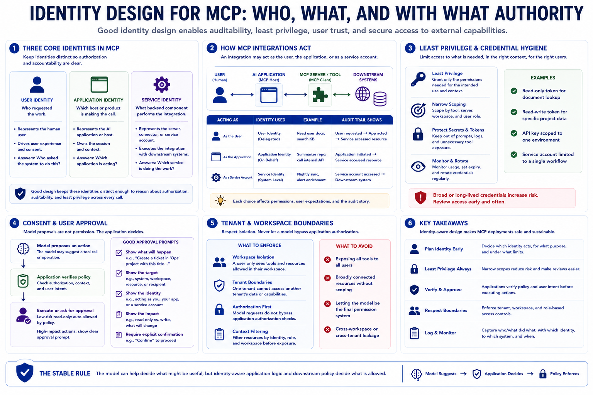

Identity, Permissions, and User Intent
Connecting to LMS... Progress: in progress

Narration
Identity design should be part of MCP planning from the start. An integration may act as the user, as the application, or as a service account. Those choices affect auditability, least privilege, and user expectations. User identity answers who requested the work. Application identity answers which host or product is making the call. Service identity answers what backend component is performing the integration. Good design keeps these identities distinct enough to reason about authorization.
Delegated access is a common pattern where an application acts on behalf of a user within defined limits. Service accounts may be appropriate for system-level workflows, but they should be narrowly scoped and monitored. Secrets and tokens should be protected from prompts, logs, and unnecessary tool exposure. Least privilege means each server, tool, or credential receives only the permissions needed for its intended use, in the intended context, for the intended users.
Consent and user approval are different from model preference. A model may propose an action, but the application should verify whether the action is allowed and whether the user intended it. For low-risk read-only requests, policy may allow execution without interruption. For higher-impact actions, the user may need a clear approval prompt showing what will happen. Approval should be specific enough to matter, not a vague blanket acceptance of future activity.
Tenant and workspace boundaries also matter. A user in one workspace should not gain access to another workspace because a tool or resource is broadly connected. A model-generated action request should not bypass application authorization. MCP integrations should not rely on the model as the final permission system. The stable rule is simple: the model can help decide what might be useful, but identity-aware application logic and downstream policy decide what is allowed.